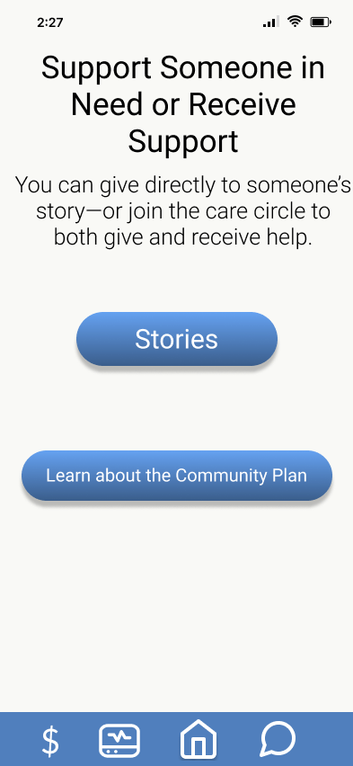
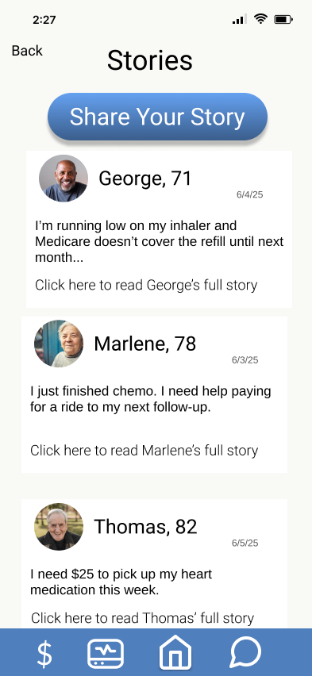
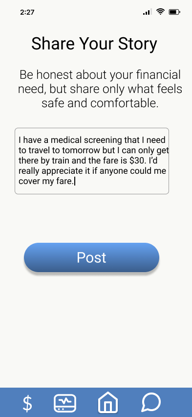
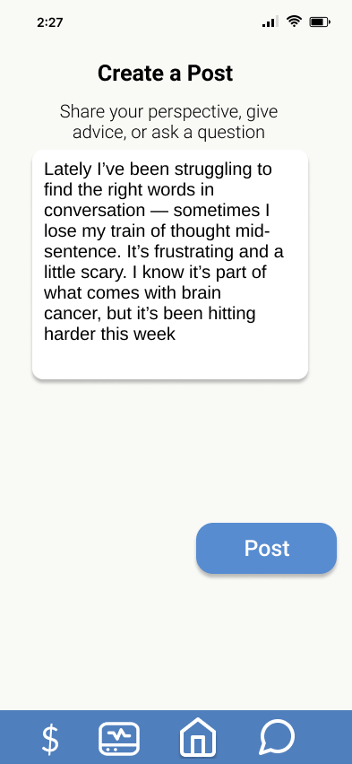
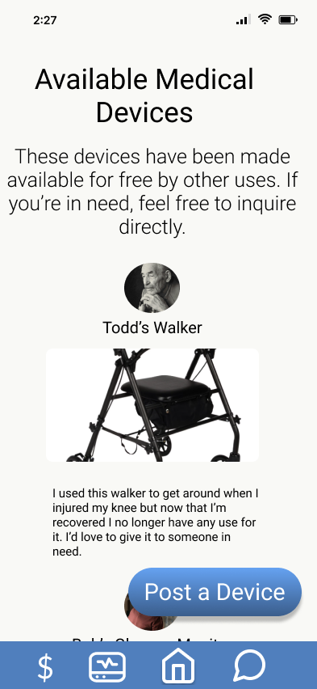
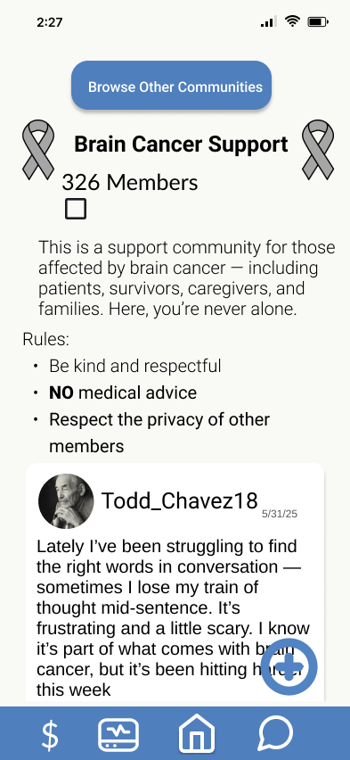

UX research + accessible product strategy
A senior-centered support platform that makes asking for help feel less public, less performative, and more human.
The challenge
SupportMe began as a research paper and Figma prototype with Penn State University's ReSENSE Research Lab in 2025.
Overview
Many seniors face overlapping challenges: illness, financial strain, isolation, and digital tools that assume high confidence, strong social networks, and comfort with public self disclosure.
SupportMe proposes one accessible space for peer support, needs based fundraising, and small Community Fund requests, designed around clarity, privacy, and fairness.
Research
I combined literature review with crowdfunding platform analysis to understand why seniors are disadvantaged before they ever press "publish."
Crowdfunding platforms often reward campaigns that already have engagement, which can bury seniors with smaller networks.
Success often depends on writing an emotional, polished story. That can pressure people to overshare during already vulnerable moments.
Campaigns rely heavily on social sharing, disadvantaging older adults who are less active or less confident online.
Design implications
Requests are surfaced through fair rotation instead of likes, comments, or shares.
The request flow focuses on clear context and practical need, not dramatic storytelling.
Discovery, forums, and Community Fund requests work without depending on outside social media.
Readable type, simple navigation, and easy to find controls are treated as core features.
Privacy forward patterns reduce fear around sharing health or financial information.
Concept
Condition and life stage groups for encouragement, shared experience, and belonging.
Requests rotate through the platform instead of being ranked by popularity.
Micro assistance for urgent needs like prescriptions, groceries, co-pays, or rides.
Readable, adjustable, senior friendly interface settings placed where people need them.
Prototype
The interface direction is calm, direct, and confidence building: enough personality to feel alive, enough restraint to respect sensitive moments.






Next step
How I show up as a UX designer
This project reflects the way I design: research led, equity minded, accessibility aware, and comfortable moving between big picture systems thinking and the tiny interface choices that help people feel safe enough to continue.